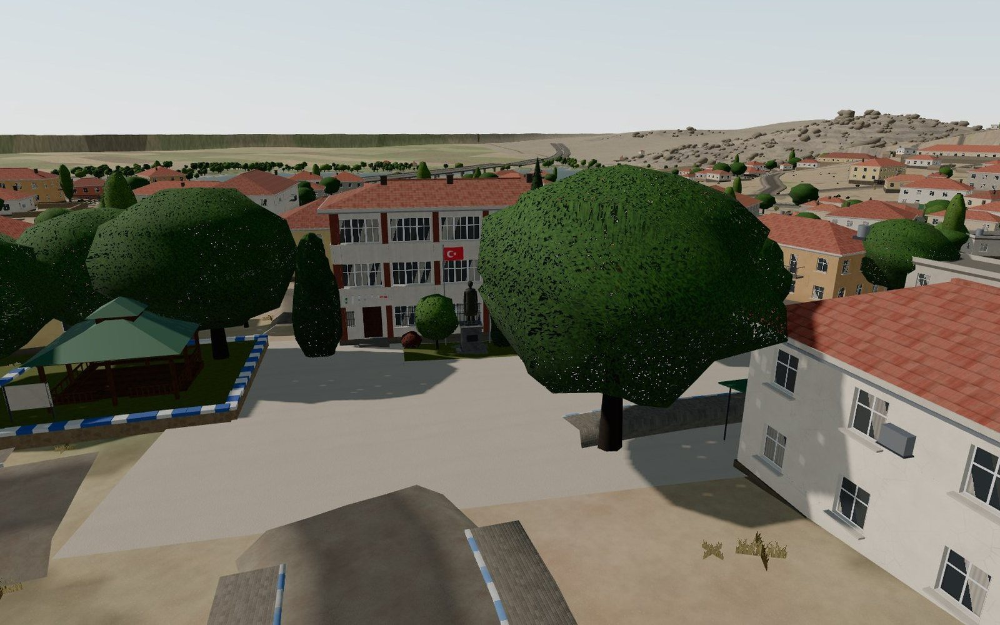
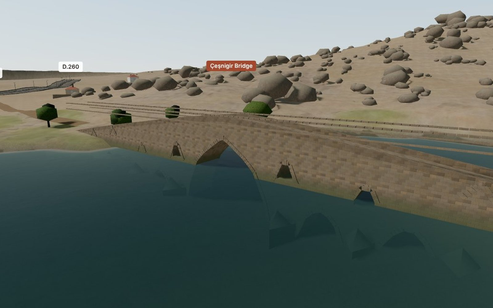
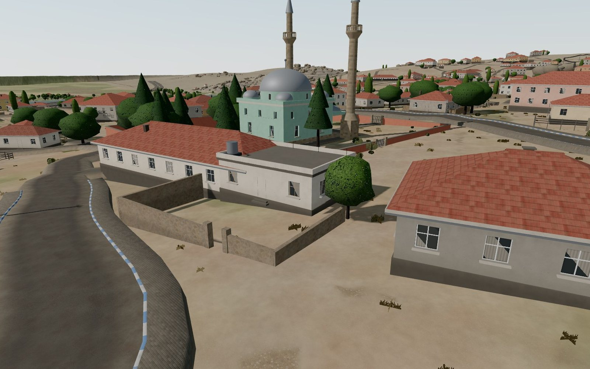

Köprüköy in 3D
A 3D model of Köprüköy, a small town in Kırıkkale, Turkey, that can be explored in the browser: the terrain, the reservoir, the streets and houses, and the 13th-century Çeşnigir Bridge.
- Role
- Idea and direction, with Claude as coding partner
- Platform
- Web browser, desktop and phone
- Sources
- Elevation data, map layers, satellite imagery, street-level photos
- Status
- Prototype; refined one detail at a time

01 · Problem
What need does it solve?
Köprüköy is a small place, and the existing 3D views of it are generic: flat roofs, blank terrain, no sense of the streets. I wanted a version of the town that could be walked around from far away and that looks the way it does on the ground.
The aim was not a game or an architectural model, but a faithful picture: the right streets, the right houses in the right places, and the landmarks people recognize.
02 · Solution
How it works
The model opens in the browser with no install. It:
- Builds the terrain from 30 m elevation data, with the Kapulukaya Reservoir at its real water level
- Lays out the road network traced from a map layer and about 720 building footprints from 0.3 m satellite imagery
- Adds landmarks modeled from street-level photos: the market square with the old municipality building and statue, two mosques, the school, cemeteries and stone walls
- Models the Çeşnigir Bridge to its recorded size: 110 m long with 12 arches, the lower ones partly under water
- Can be explored with map-style touch controls on a phone, or a mouse on desktop






03 · Architecture
How the system fits together
04 · Technology
What it is built with
| Rendering | Three.js and WebGL in a single static page, hosted on GitHub Pages |
|---|---|
| Terrain | SRTM 30 m elevation grid, with the reservoir surface at 724 m |
| Layout | Roads traced from a map layer and building footprints from 0.3 m satellite imagery, georeferenced on the bridge |
| Materials | Textures generated with a Python script for terrain, walls, roofs, roads and water |
| Export | The model is also available as a Blender file (1 unit = 1 m) |
05 · Challenges
Hard parts and how they were solved
Putting every house in the right place
An early version placed buildings by estimate, and the village did not read correctly. The layout was rebuilt in a fixed order: roads from the map first, then house positions from satellite imagery, then details.
Lining up different sources
Elevation data, map tiles and satellite photos each have their own scale and offset. All of them are aligned on one fixed point, the Çeşnigir Bridge, so the layers sit on top of each other.
Looking right from the street
Footprints alone give boxes. The square, mosques and school were compared view by view against street-level photos, and colors, storeys and façade details were adjusted until they matched.
Knowing when to stop
Not every change made the model better; one full re-layout was rolled back. The work now moves in small, checked steps, keeping only what looks closer to the real place.
06 · Results
What came out of it
- The whole town can be explored in a browser, on a phone or a computer.
- Streets and building positions follow the map and satellite layers rather than guesses.
- The main landmarks are recognizable from the angles people know them.